M-23 很久以前，像素画是用数字画的
原标题：Long Ago, Numbers Were Used to Draw Pixel Art
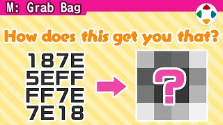
速览
很久以前，在被称为「微电脑（My Com）」的个人电脑上做游戏，就得自己打角色的点阵——大约 1980 年代前半；多数情况下根本没有绘图工具，大家都要用数据，也就是数值来打点。那怎么画画？作为古老的记录，樱井讲当年微电脑少年是怎样画点阵的。首先是 16 进制：平常用的 10 进制到 10 进位，16 进制在 9 以上用 A～F，F 之后才进位，A=10、B=11……一位 16 进制数能画 4 个点：1 是最右边填满；2 是左边一个填满、最右边空；3 = 1+2；4 再进一位……8+1=9，接着是 A=10、B、C、D、E，到 F 全部填满——这样能表现 4 点宽的图。所以两位 16 进制能表现 8 点宽，比如 4E 就是这样；8 行就构成一张 8×8 单色图，例如这张图就是 18 7E 5E FF FF 7E 7E 18（对吗？）。多半是在方格纸上画好、用眼睛数出来；他则是画十字线，按大致位置读取。他还在课堂上借朋友的口袋电脑，「噼噼噼」地改游戏内容和点阵——上课还是认真点好。要做彩色，若像 FC 那样由 3 色构成，两张同尺寸的点阵数据就够：叠起来看每个点「都没有 / 只有 1 / 只有 2 / 两者都有」4 种组合，就能表现透明 + 3 色。实际上还会做压缩：例如比起写 00000000，写「0x8」更短。和用数据打点比起来现在轻松多了，但轻松之余也用上了复杂得多的技术，无法相比。不过回看原点挺有意思吧？
1. 用数值打点的时代 0:13
1980 年代前半，在「微电脑」上做游戏，要自己打角色的点阵。多数情况下根本没有绘图工具，大家都用数据——也就是数值——来打点。
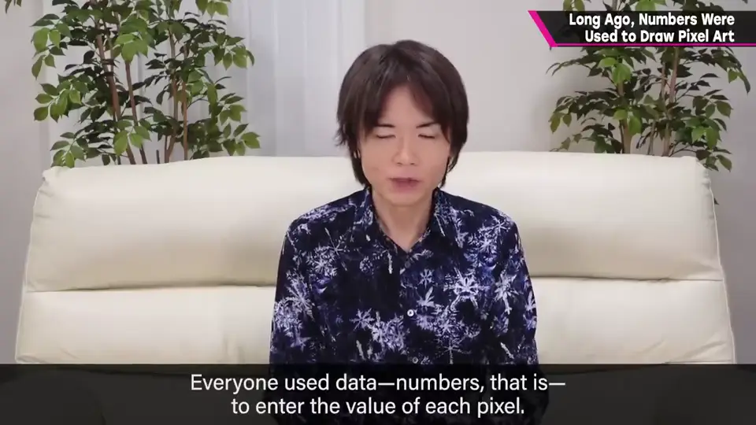
2. 16 进制 0:50
10 进制到 10 进位；16 进制在 9 之后用 A～F，F 之后才进位（A=10、B=11……F=15）。
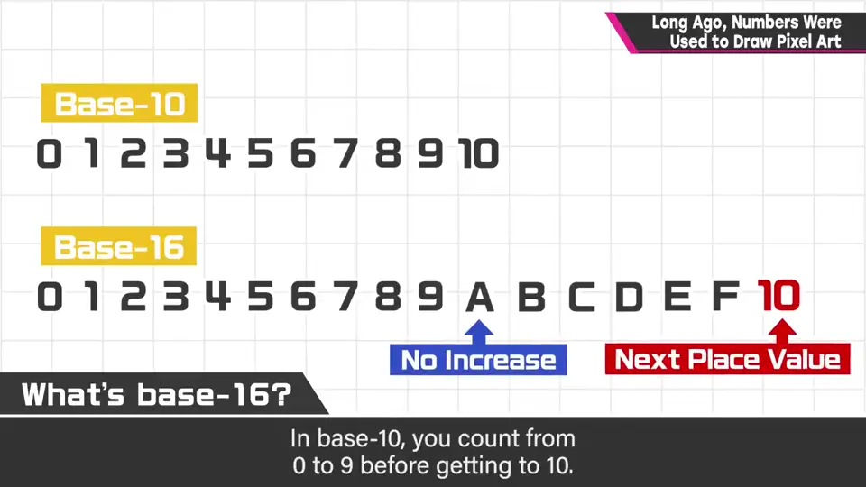
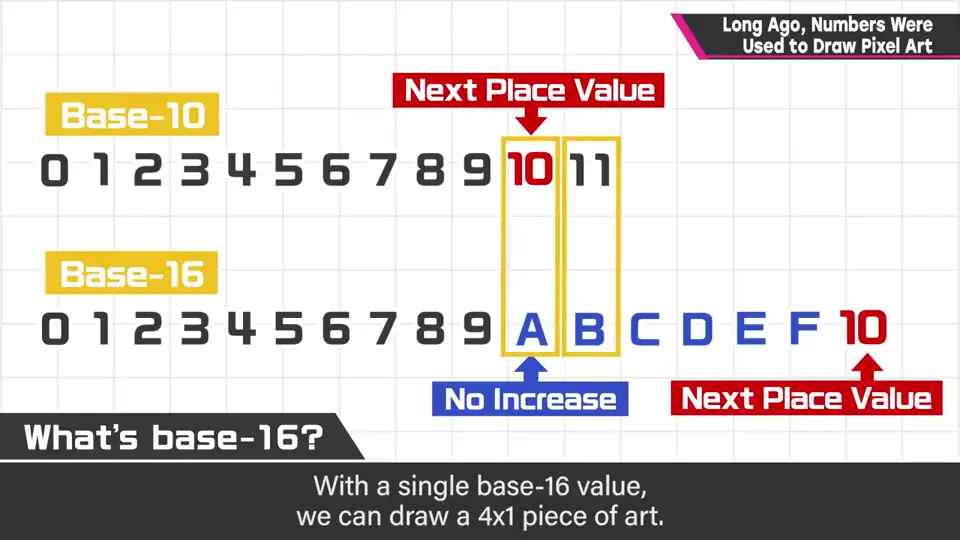
3. 一位 = 4 个点 1:20
一位 16 进制数能画 4 个点，四个格子的权重从左到右是 8、4、2、1：
- 1：最右一格填满。2：右数第二格。3 = 1+2。
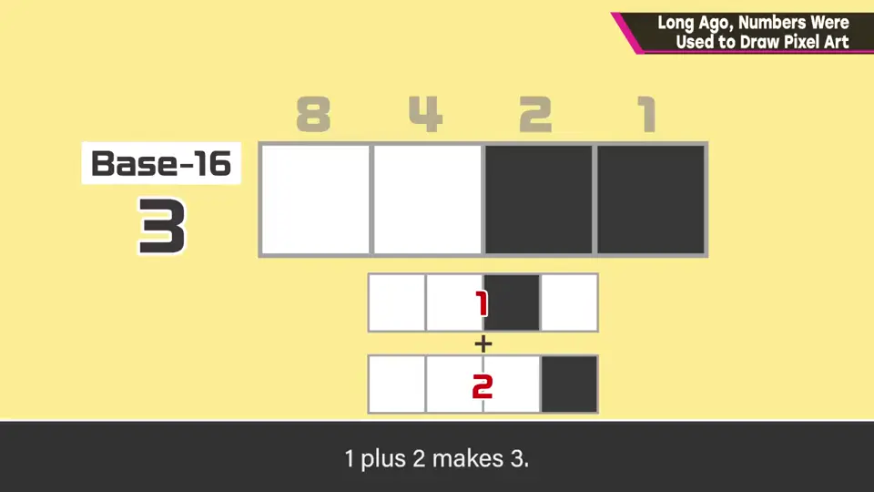
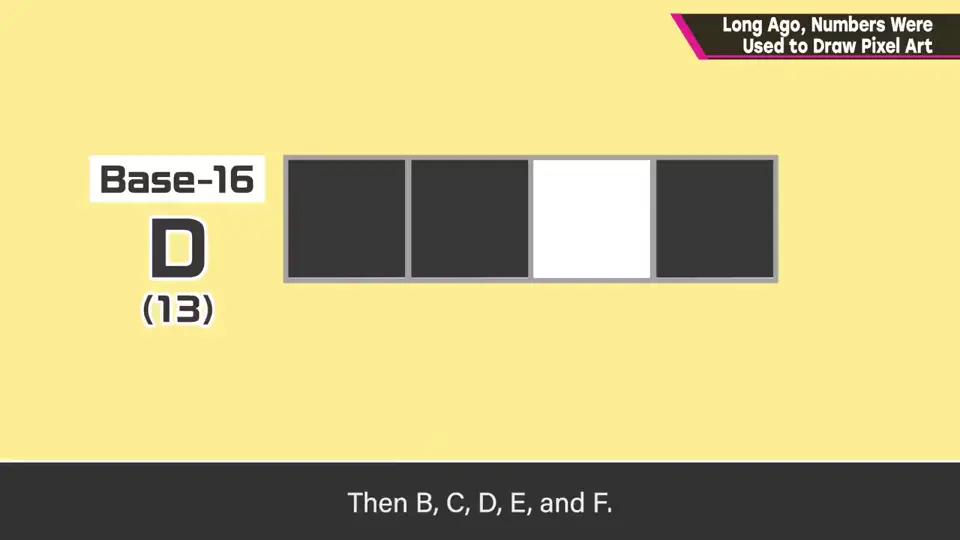
- 8：最左一格；9 = 8+1；A=10……到 F 全部填满。
4. 两位 = 一行 8 点 2:05
所以两位 16 进制能表现一行 8 个点，8 行就是一张 8×8 的单色图：
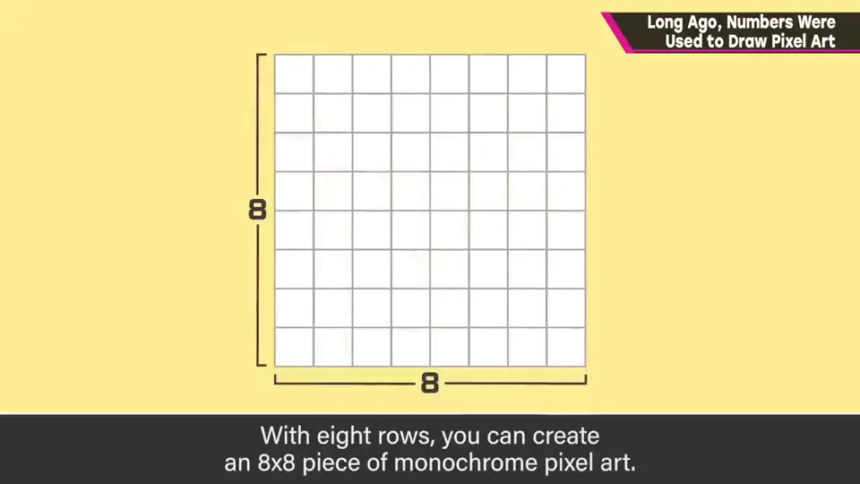
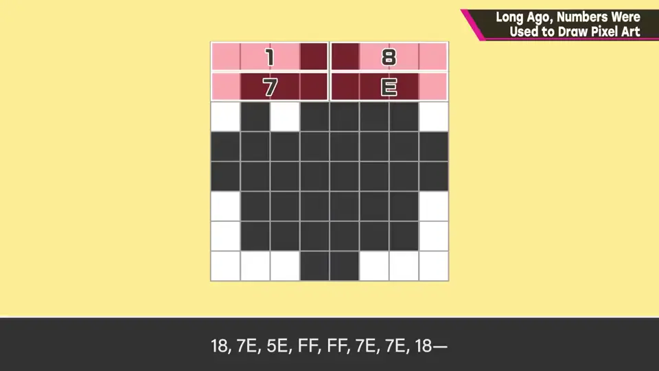
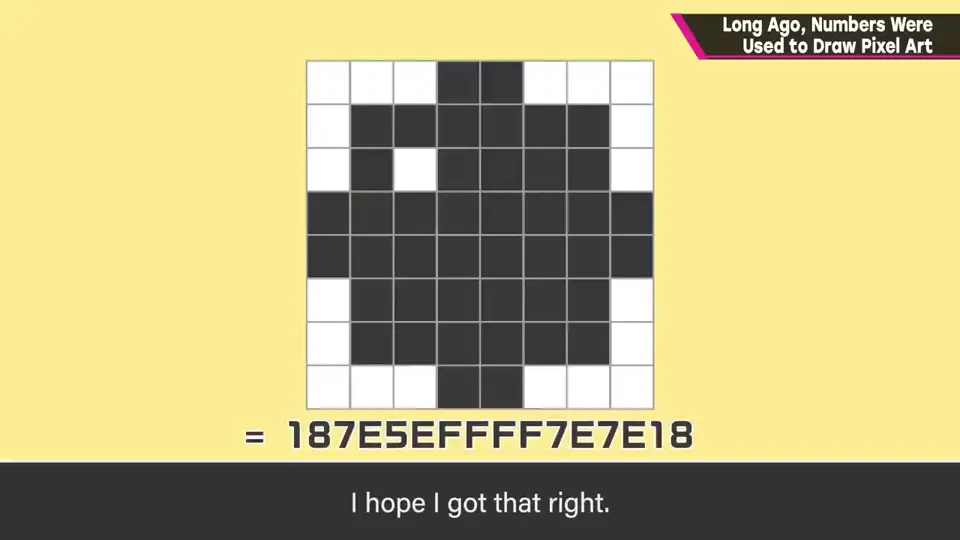
行1: 18 → 00011000
行2: 7E → 01111110
行3: 5E → 01011110
行4: FF → 11111111
行5: FF → 11111111
行6: 7E → 01111110
行7: 7E → 01111110
行8: 18 → 00011000
合起来: 187E5EFFFF7E7E18多半是在方格纸上画好、用眼睛数出来；樱井则是画十字线，按大致位置读取。
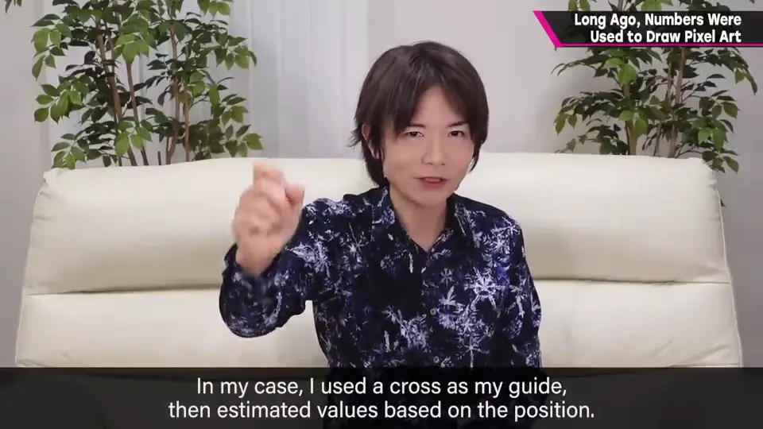
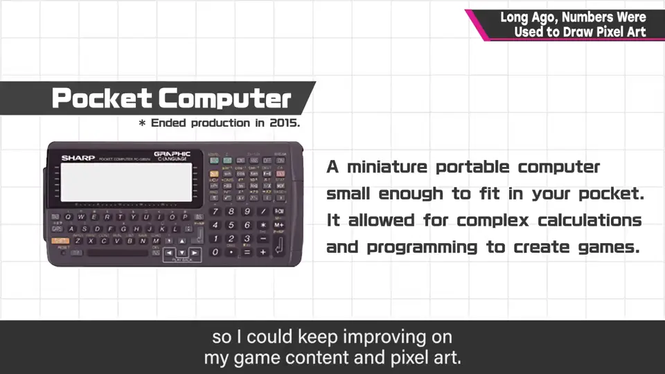
他还在课堂上借朋友的口袋电脑改游戏内容和点阵——上课还是认真点好。
5. 彩色与压缩 3:04
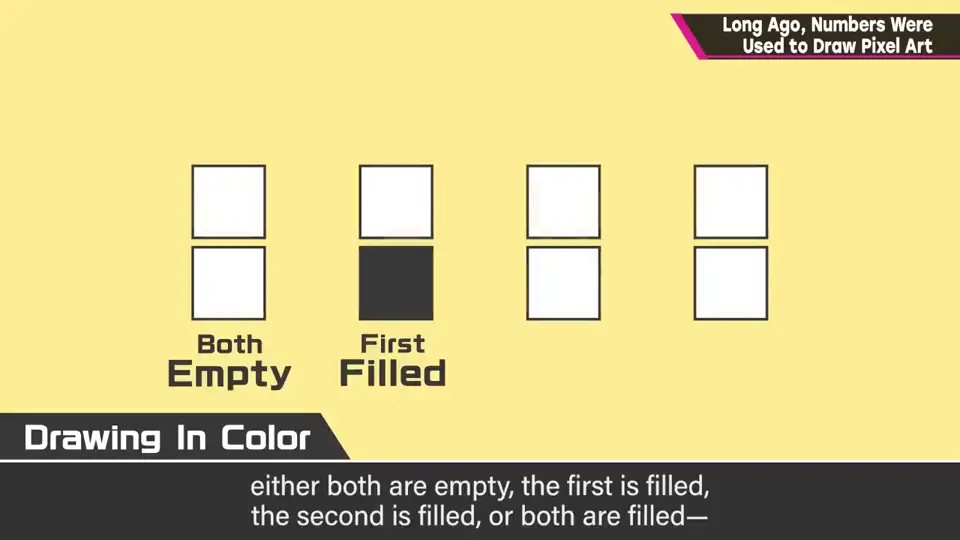
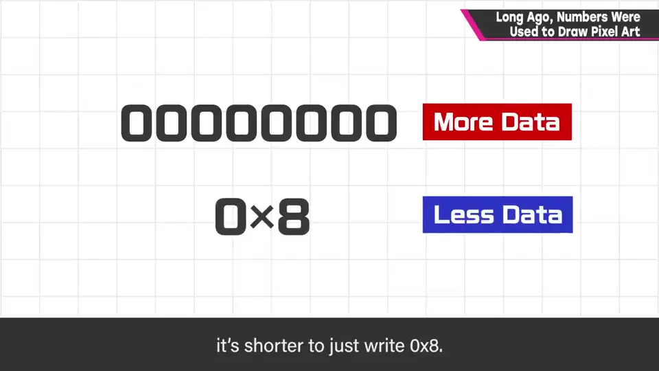
实际还会压缩数据：比起写 00000000，写「0x8」更短。
6. 回看原点 3:50
与用数据打点相比，现在轻松多了；但轻松之余也用上了复杂得多的技术，无法相比。回看原点，挺有意思吧？
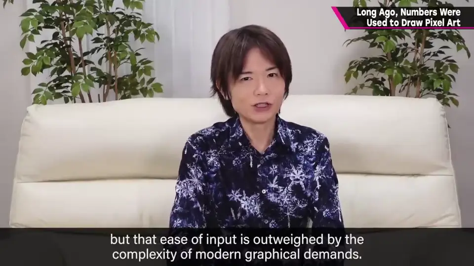
自测题
1. 一位 16 进制数能表示几个点？两位呢？
一位 4 个点；两位 8 个点（一行）。 1:25
2. 像 FC 那样的 3 色点阵怎样用数据表现？
两张同尺寸点阵叠加，4 种组合 = 透明 + 3 色。 3:20
3. 数据压缩的例子是什么？
用「0x8」代替写 00000000。 3:40